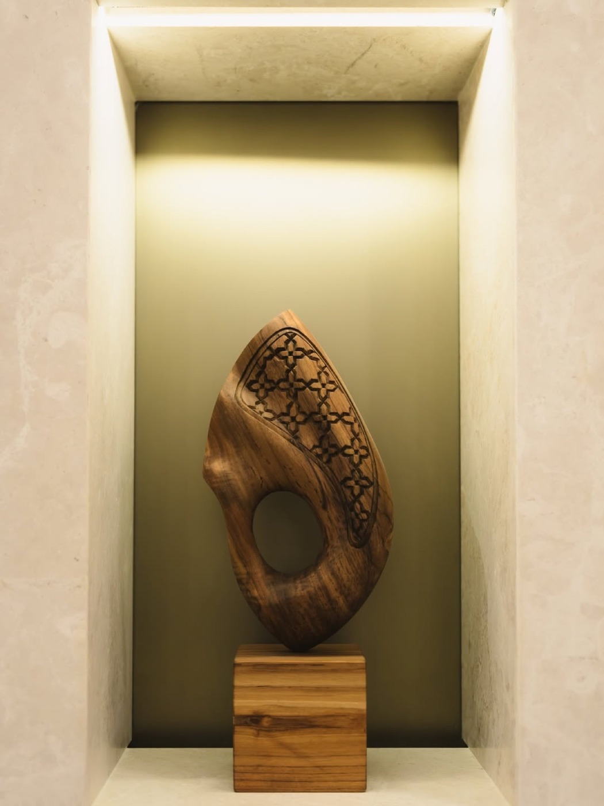
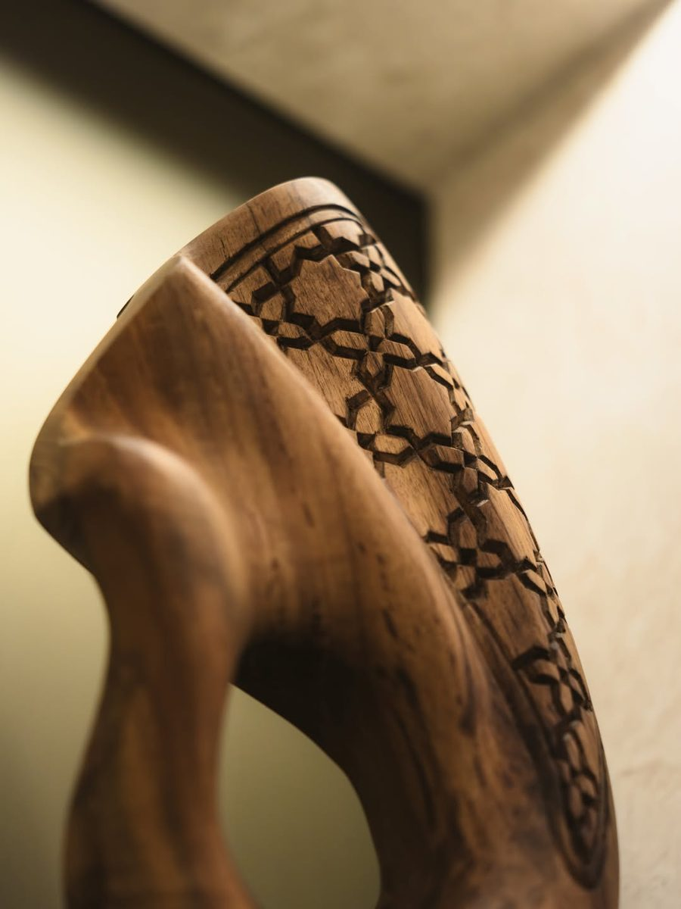
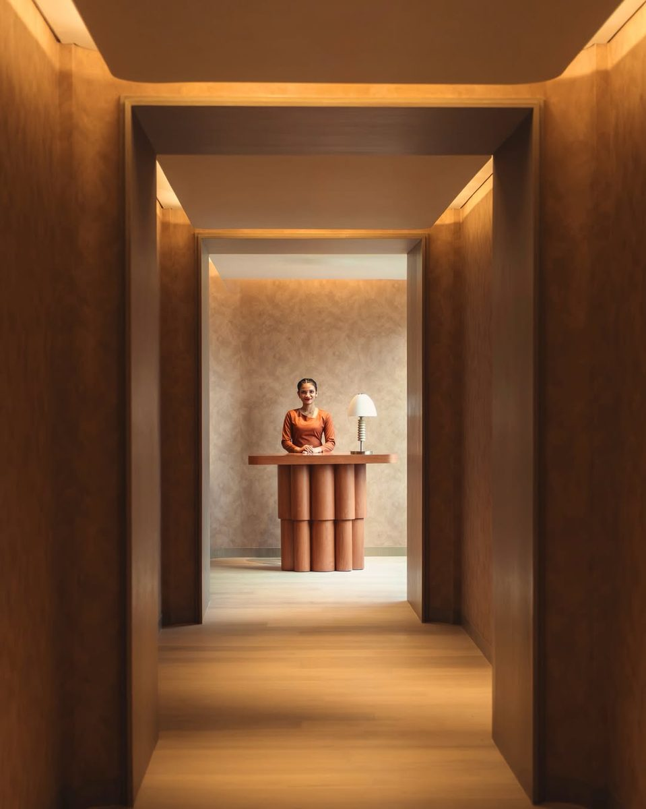
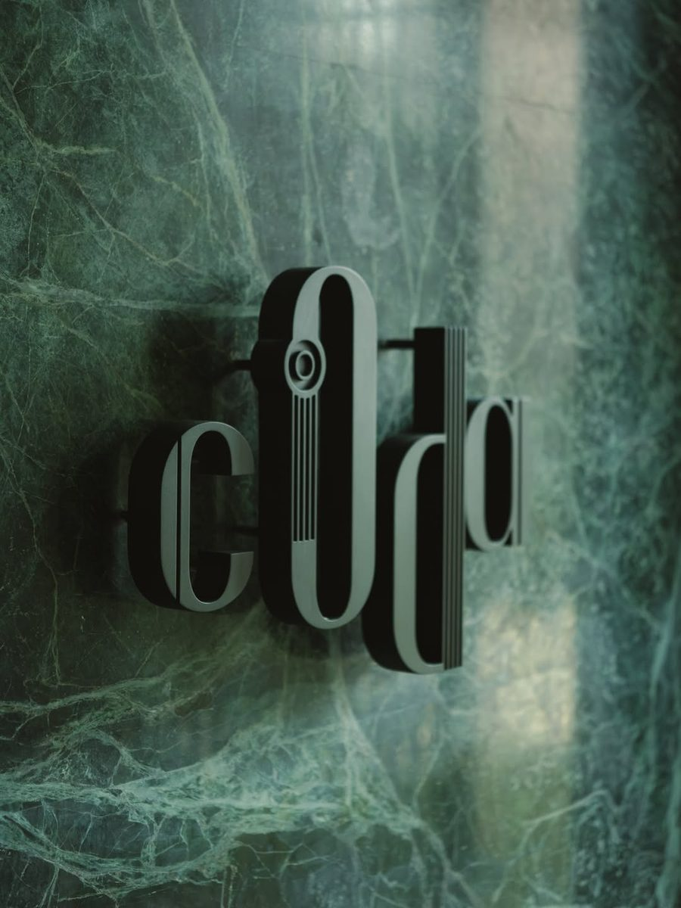
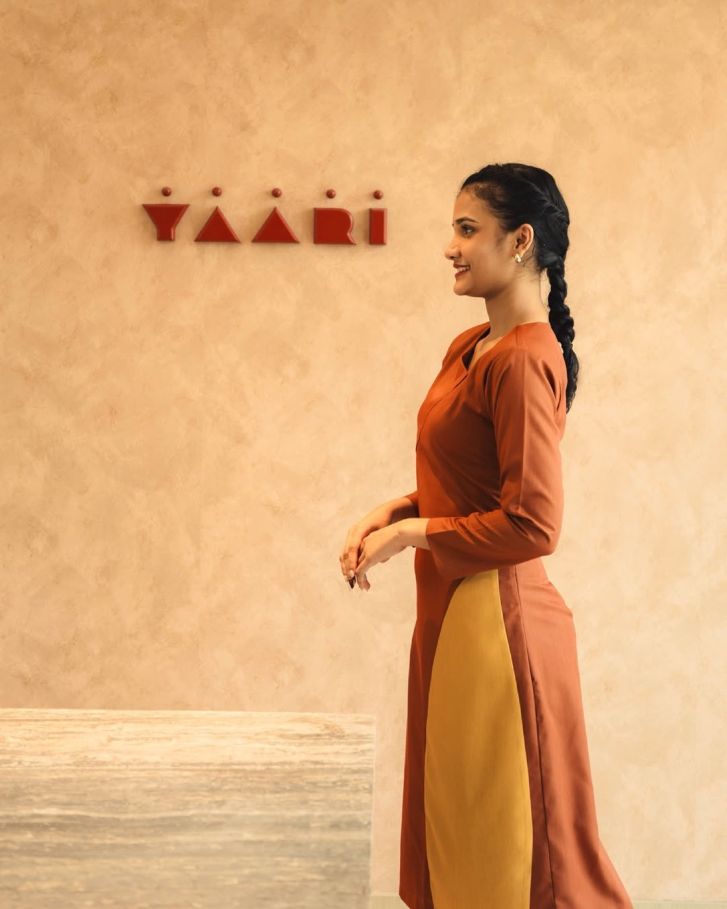
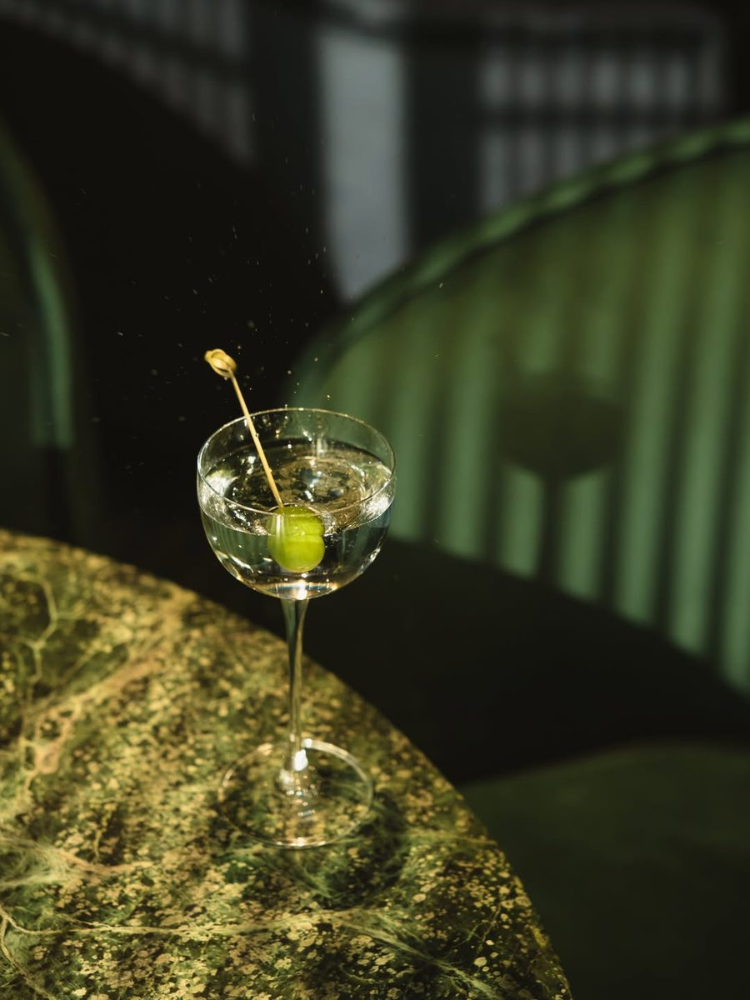
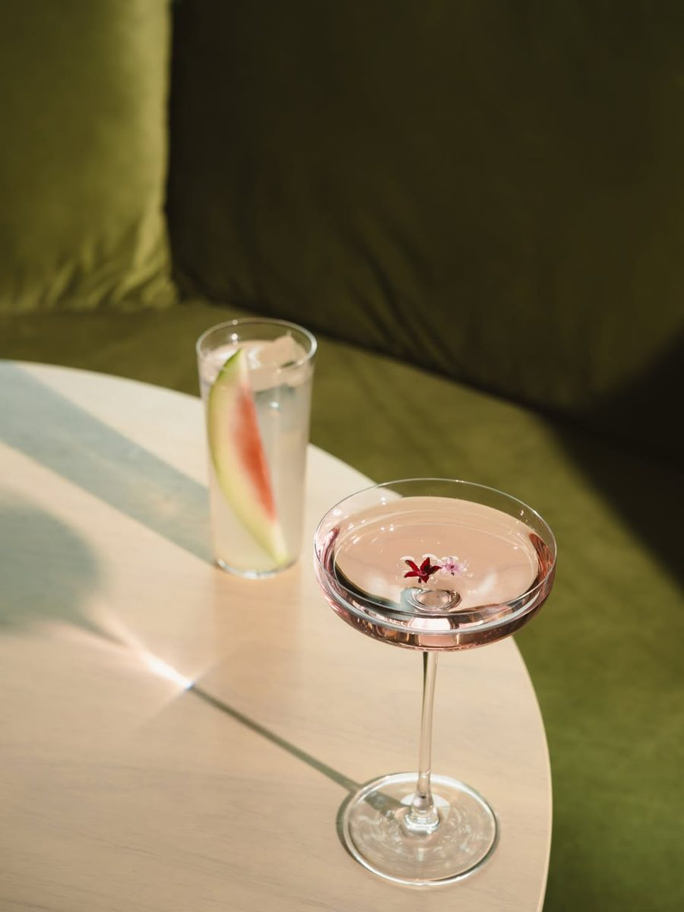
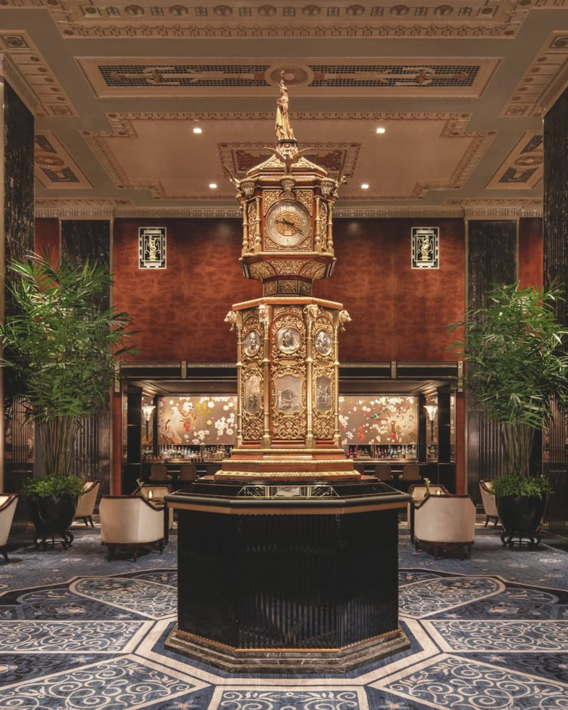
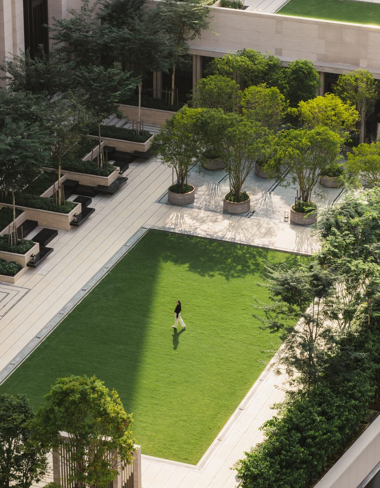

10 月 30 日，吉隆坡。华尔道夫在这座城市开出第一家酒店，位置在金三角，268 间客房，全部为套房。
全套房这三个字，值得单独停一下。
01｜删掉标准房，等于删掉一道赌局
常规城市奢华酒店的房型表是一条阶梯：入门房、豪华房、行政房、套房。这条阶梯承担着一个隐性功能，让客人抱着"也许能升级"的期待下单。
全套房把这道赌局取消了。每一间都带起居分区，每一间的落地窗都对着城市天际线。对客人，这是确定性；对酒店，这是把"升级"这项运营技巧，换成了"房量"这项硬约束。
代价也很清楚。同样的楼板面积，房数更少，单房造价更高，公区与后台要按更高的人均服务强度配置。这要求平均房价必须站得住，也要求客源结构足够稳定。换句话说，全套房不是慷慨，是一次对市场承受力的下注。


02｜Layan Tetamu：把服务标准交还给本地
品牌给出的服务主张是一个马来语词组，Layan Tetamu，直译是"款待客人"。它强调真诚、贴心与个性化，而不是把总部的服务手册翻译一遍。
这句话在东南亚有具体含义。这一带的奢华酒店长期由两套语言主导：国际集团的标准化流程，和本地待客传统里的"过度照顾"。前者可复制，后者不可复制。华尔道夫选后者做卖点，说明它判断这里的客人要的不是"和纽约一样"，而是"只有这里才有"。


03｜两位主厨，一间酒店
餐饮是这家酒店最不掩饰的野心。
曼谷 Gaa 的主理人 Garima Arora 在餐厅 Yaari 做现代印度料理。Gaa 是米其林二星，也是亚洲最具个人风格的餐厅之一，她的路径是从哥本哈根的 Noma 出发，回到印度做自己的味觉体系。Jean-Georges Vongerichten 则参与三处餐饮空间，这位在纽约、上海、东京都留下过招牌的法国厨师，擅长把法餐的骨架装进当地食材。
两位主厨的分工很有意思：一位负责"这里只能吃到"，一位负责"这里一定好吃"。前者做话题与在地性，后者做稳定性与酒店客的信任。这是当下奢华酒店餐饮最常见的组合拳，也是它区别于独立餐厅的地方，酒店卖的是一整天的动线，早餐、下午茶、晚餐、深夜一杯，需要一个能撑住全时段的厨房。



04｜为什么是吉隆坡
过去十年，东南亚的高端客流动线是新加坡单极。曼谷靠设计与餐饮分流了一部分，吉隆坡一直缺一个足够有说服力的地址。
全套房是一个聪明的切口。它不跟曼谷比设计，不跟新加坡比密度，而是直接给出一个"每间房都够大"的承诺。对家庭客与长住客，这是最实际的差异；对商务客，这是最容易被复述的差异。


对旅行者的建议很简单：如果行程里有吉隆坡，值得为它留两晚。如果只是转机，把它换成下次专程来的理由。